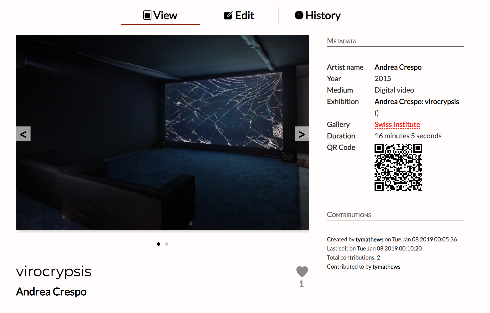

Allow me to introduce myself - my name is Maxwell Foley, but you can call me Max.

I am a full-stack software developer specializing in writing complex web applications in Node and React to fit the needs of my clients. Currently I am technical lead for Artifaq.IO and operate as an independent contractor.
Within the world of coding, my travels have also allowed me to dive into graphics algorithms and blockchain technology, which I research and explore on the side.
When I'm not working with code, I'm either making digital art in Photoshop and 3d rendering software, or using a beat-making program to write electronic music.
If you are looking for someone of my skillset, feel free to send me a message. I love to meet other tech lovers and work together or just chat.
I am currently technical lead and responsible for the bulk of the development of Artifaq.IO, an platform for art enthusiasts and curators alike, in MVP status as of January 2019.
Originally titled Artstamp.IO, the software began its life as a blockchain app backed by an Ethereum smart contract in which users could upload art assets to the chain and buy, sell, and trade those works. I was responsible for outlining this app's features and designing its architecture, as well as writing and implementing all the blockchain functionality.

After the peak of the ICO bubble and increasing public skepticism towards blockchain platforms, the team made a decision to shift focus and we are now solely an art platform designed to give "power to the people" by facilitating the discovery of under-explored works and breaking the hold of the existing gallery infrastructure on determining who gets seen.
The software is written entirely in Javascript, with Node as the back-end, Mongo as the database, Express for middleware, and a React front-end.
Development of Artifaq.IO is funded by Fabricatorz Foundation, whom I have worked for both as a full-time employee and independent contractor.

Created an interactive art installation conceptualized and built in 48 hours for St. Louis's Art Hack Day: Eclipse event. The installation used a NeuroSky MindWave Mobile EEG-reading headset, which was connected to my laptop via bluetooth, which ran this code and then used a projector to display an image on the wall. The idea was for the art piece to serve as a sort of impressionistic visualizer of one's mental activity, specifically how calm and/or focused the person using the headset was.
The project used node.js to communicate to the headset, and three.js to render the visuals in the browser.
A demo version where the user can use GUI sliders to simulate the EEG output is here, and the full code of the project is available on GitHub.
Working on various rendered scenes built entirely in code using volumetric raymarching rendering technique via GLSL shader language, hosted on GLSLsandbox.com.
Flashcard quiz app using the MEAN stack. Users can create sets of flashcards, upload images, edit and delete flashcards, and then quiz themselves. Heroku was used to deploy the app and Bootstrap was used for CSS. Filepicker.js was used for file uploading.

Several interactive visuals initially built in Processing then ported into P5.js for online compatibility. Try clicking and moving the mouse around to see what happens. Warning: might be too intense for slower computers.
@pseudo_frac is a now-defunct twitter bot that for a period of time generated an image from the "pseudo-fractals" algorithm above and posted it to Twitter once every 24 hours. Written in node.js and p5.js and deployed on Amazon EC2.
This was built for a project for an art class in which we were required to create a geneology of artists of the past five hundred years and find a way to visually integrate it with contemporary historical events. I developed a simple interactive page in JavaScript in which three sections of the website scroll simultaneously - a gallery of paintings, a timeline of historical events, and a horizontal timeline at the top simply for visual integration purposes. One can then click on a historic event to find the corresponding artist, or click on a handful of selected influences underneath each artist to jump to that point in the timeline.
The website you are currently reading was designed and coded by myself from scratch in HTML, CSS, and JavaScript.
Fabricatorz Foundation
Software Developer and Blockchain Engineer, Independent Contractor (April 2018 - present)
Reliv International
Contractor (November 2017 - April 2018)
Less Annoying CRM
Software Development Intern (May 2017 - August 2017)
Iowa State University
Independent Contractor (May 2015 - August 2015)
Ohio State University Department of Biomedical Informatics
Intern (May 2014 - August 2014)
Washington University in St. Louis B.F.A in Studio Art with second major in Computer Science (August 2013 - December 2017)